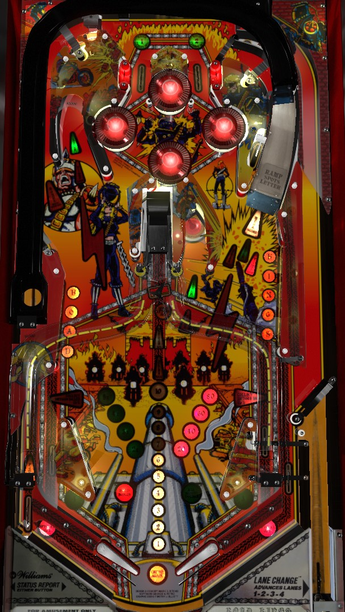

The main (and really only) attraction on Road Kings is multiball. Complete the Road or Kings targets to randomly light one of the three locks in the game. Lock two balls to start multiball, where all scoring is doubled. During multiball, relock the two balls within about 15 seconds of each other to score the Time Lock jackpot, then shoot under the now-raised right ramp for 300,000 points a shot. Lighting both top lanes and both in lanes advances the bonus multiplier and briefly lights the left orbit shot for bonus holdover.
The top lanes, labelled 1 and 2, and the in lanes, labelled 3 and 4, form a single set of lanes. All numbered lanes score 2,000 points and 2 bonus advances. Roll through an unlit lane to light it. Lit lanes can be rotated via flipper lane change with the right flipper only. Lighting all 4 lanes increases the bonus multiplier by 1 toward its maximum of 5x, and also lights the left orbit for Hold Bonus for about 10 seconds. The Hold Bonus is still lit for 10 seconds even after the bonus multiplier is maxed out.
Going through a 1 or 2 top lane that is already lit will re-raise the center drop target if it has been lowered.
Hit a flashing target in Road or Kings to light it and score 5,000 points. Letters can also be spotted at the center drop target when lit, center ramp when lit, and right ramp when lowered. Spelling Road or Kings lights one of the three saucers for lock- upper left lane, center lane just right of the center ramp, and right ramp. Lock 2 balls to start multiball. Shooting a saucer that is not lit for lock scores 10,000 points and advances the Eject Bonus. The Eject Bonus starts at 10,000 points, increases by 20,000 points each time it is advanced, and is collected when multiball starts. The Eject Bonus is carried over across players within a game, but is reset at the start of a new game and anytime any player starts multiball.
Once Road or Kings is spelled, the other must be spelled before the first can be spelled again. Spelling both Road and Kings three times lights the center drop target for extra ball.
Multiball always contains 2 balls. All playfield scoring is doubled during multiball. Top priority when multiball begins is to relock the two balls within about 15 seconds of each other at any of the three lock locations around the playfield. Successfully doing so awards the Time Lock bonus. The Time Lock starts at 200,000 points, increases by the value of any scoring obtained in multiball, and carries over across players and games. I am not aware of a maximum value for the Time Lock jackpot, but I would expect a maximum of around 2,000,000 points, similar to the Hideout Jackpot on High Speed from around the same time. Once the Time Lock jackpot has been collected, the raised right ramp will be lit for extra ball for 17 seconds. Collecting the extra ball or timing it out will light the same shot for Mega Score, worth 300,000 points. Only one Time Lock jackpot available per multiball.
It may be desirable to use multiball to re-complete all but one target in the Road and Kings banks, so that it takes just one shot to each bank to relight locks and have another multiball ready as soon as the current one ends.
The Detour value starts at 50,000 points for each player on each ball. Shooting up the center ramp will put the ball in either the right in lane or the left out lane. (If the ball goes into the left out lane, the kickback will fire it back into play, even if the kickback is not lit.) This adds 50,000 points to the Detour value. Completing the Road targets lights the left Detour, and completing the Kings targets lights the right Detour; making a center ramp shot that falls to the lit side scores the current Detour value before increasing the value, and unlights that side. If there is a maximum Detour value, it is at least 550,000 points.
Road Kings has a conventional in/out lane setup. The left out lane scores 25,000 points and has a kickback that is on at the start of the game, turns off once used, and is relit by completing either the Road or Kings targets. The right out lane also scores 25,000 points. The in lanes score 2,000 points and 2 bonus advances, and form the 3 and 4 lanes in the 1-2-3-4 set.
Notice that the one-way gate that serves as the exit to the shooter lane is very low on the table, positioned just above the entrance to the in/out lanes. The ball can access this area in live play and get funneled into the in or out lanes. Be mindful of this additional room for activities and be proactive about nudging the ball away from the in/out lane area.
Bonus starts at 1,000 points and is advanced by the center drop target and any top lane or in lane. Max base bonus is 99,000 points. Bonus multiplier is incremented by completing a set of 1-2-3-4 lanes and maxes out at 5x. Completing the 1-2-3-4 lanes also lights the left orbit shot for bonus holdover for 10 seconds. Max bonus is 5x 99,000 = 495,000 points. Bonus holdover keeps the base bonus to the next ball, but there is no way to carry over the bonus multiplier. Base bonus is lost if bonus holdover is not earned. If bonus holdover is earned on the final ball of the game, then the final end of ball bonus collect will occur twice, with the second bonus count occurring at 1x multiplier. There is no mid-ball bonus collect.
In competition/novelty play, specials score 100,000 points. I am not aware of a setting that assigns a point value to extra balls.
The Time Lock feature can be set to "easy, regular, or hard". I believe these correspond to approximately 10, 15, or 20 seconds, though no timer is shown in-game.
Hold Bonus can be lit for anywhere from 7 to 15 seconds. Default is 10.
Detour Value can be increased by any multiple of 10,000 from 10,000 to 90,000 per center ramp shot. Default is 50,000.
I have seen copies of Road Kings before where shots to saucers not lit for locks increased the Eject Bonus by only 10,000 instead of 20,000. I am not sure if this is a mislabelled setting in the game code, or a custom code set altogether.
The center target extra ball can be lit after 2, 3, or 4 completions of Road Kings. Default is 3.
The right ramp extra ball, which is lit after collecting the Time Lock jackpot, can be available for between 15 and 25 seconds. Default is 17.
If average ball time of the first two balls is less than 33 seconds, the center drop target may be lit for extra ball for free for the first 30 seconds of the final ball.
The Mega Score shot in multiball can be set to any multiple of 100,000 points from 100,000 to 500,000 inclusive. Default is 300,000.